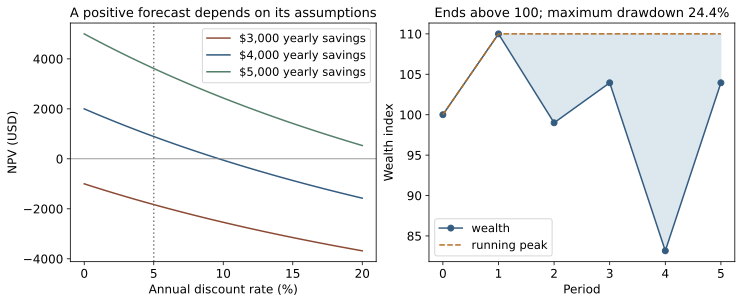
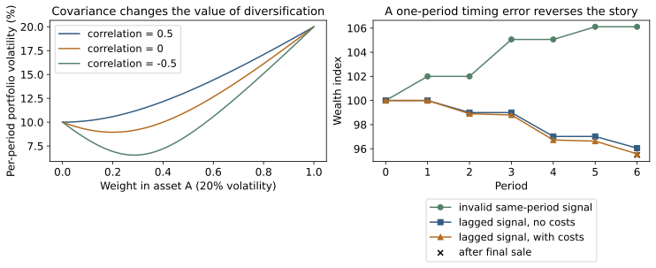

Browse chapters
17 Analyze cash flows returns and risk
Start with an engineering investment
An engineering team can spend $10,000 now to improve a service. The proposal forecasts $4,000 of net operating savings at the end of each of the next three years. A spreadsheet says the project makes $2,000. Is that the right comparison? What changes if the savings arrive late, demand falls, or the project ties up money needed for another commitment?
This chapter starts with that decision. We will value cash flows at a common date, distinguish different kinds of returns, connect portfolio risk to Chapter 14's covariance matrix, and build a tiny backtest whose timing can be audited row by row. The aim is to understand what a financial result means and what evidence would support using it.
All monetary amounts, returns, portfolios, and scenarios here are synthetic educational examples. They are not current market estimates, an evaluation of a real investment, or personalized investment advice. The companion contains no live prices, trading connection, or recommended asset allocation.
The central discipline remains the same as in the scheduler chapters: define the alternative, preserve units and timing, test the accounting, and separate what was measured from what was assumed. A precise answer to the wrong cash-flow question can be more misleading than a rough answer to the right one.
Put every cash flow on a dated timeline
A cash flow is an amount entering or leaving the decision maker's account at a specified time. Use positive signs for inflows and negative signs for outflows. Record currency, date, nominal or inflation-adjusted units, and which alternative the flow belongs to. Profit, revenue, avoided cost, and available cash are different quantities.
For the improvement proposal, use incremental cash flows relative to keeping the existing system. Include implementation, ongoing maintenance, migration downtime, and any remaining resale or disposal value that the comparison actually changes. Avoided staff time becomes a cash saving only if it changes paid spending; otherwise it may represent capacity or another operational benefit worth reporting separately. Sunk spending that cannot change with the decision is not a new incremental outflow.
Our deliberately simplified timeline is:
| Time in years | Incremental cash flow in USD | Meaning |
|---|---|---|
| 0 | −10,000 | Pay for the improvement now |
| 1 | 4,000 | First year net savings |
| 2 | 4,000 | Second year net savings |
| 3 | 4,000 | Third year net savings |
The undiscounted sum is $2,000. To compare money at different dates, choose a discount rate whose time unit and interpretation match the flows. If one dollar now becomes 1+r dollars after one period, then one dollar received after t periods has present value 1/(1+r)^t. Net present value adds those discounted flows, including any flow at time zero:
NPV = sum over t of cashflow_t / (1 + r)^tPresent-value analysis gives a common-date representation of dated payments. Choosing a rate and deciding whether the forecasts are credible are separate substantive tasks. MIT's finance material develops cash-flow valuation and compounding conventions; the calculations below are original teaching fixtures. MIT present value relations
At a stipulated annual discount rate of 5 percent, the three savings have present values approximately $3,809.52, $3,628.12, and $3,455.35. Their sum minus the initial cost is 892.99.At10percent, NPVisapproximately−52.59. A positive NPV is conditional on the proposed alternative, cash flows, and chosen rate; it is not a guarantee that money will arrive.
import numpy as np
from gis_finance_examples import npv
cashflows = [-10000, 4000, 4000, 4000]
assert np.isclose(npv(cashflows, .05), 892.9921174819128)
assert np.isclose(npv(cashflows, .10), -52.59203606311212)Notice that the companion places the first entry at t = 0. Spreadsheet and library NPV conventions can differ about whether the first input is discounted by one period. A one-period shift can change the decision. Test the function with an immediate payment before trusting a larger model. For irregular dates, supply explicit elapsed times and state the day-count convention; integer array indices do not know what a calendar year means.
Make rates and units agree
If a nominal annual rate of 12 percent is compounded monthly, the monthly rate is 0.12/12 and the effective annual rate is (1 + 0.12/12)^12 − 1, approximately 12.683 percent. If 12 percent is instead an effective annual rate, the equivalent monthly rate is (1.12)^(1/12) − 1, approximately 0.949 percent. These are different contracts expressed with superficially similar numbers.
Continuous compounding writes a growth factor as exp(k t), where k is a continuously compounded rate per unit time. The equivalent one-period effective rate is exp(k) − 1. This is a change of representation, not additional economic growth. Store whether a quoted rate is periodic, effective annual, nominal with a compounding frequency, or continuously compounded.
Inflation introduces another unit choice. If nominal wealth grows by factor 1+r_nominal while the price level grows by factor 1+inflation, real purchasing power grows by their ratio:
1 + r_real = (1 + r_nominal) / (1 + inflation)With a 5 percent nominal rate and 2 percent inflation, the real rate is about 2.941 percent. Subtracting the two percentages gives a useful small-rate approximation, not the exact answer. Discount nominal flows at a consistent nominal rate, or real flows at a consistent real rate. Mixing them can count inflation twice or not at all.
Do not add different currencies without an exchange-rate convention. Do not apply an annual rate once per monthly row. Do not interpret 5 as a 5 percent return when the code expects 0.05. A financial table benefits from the same schema discipline as an engineering trace: amount, currency, timestamp, unit, sign, and provenance are part of the measurement.
Test the assumption that controls the decision
Solve for the annual savings needed to break even at 5 percent. If the same savings amount S arrives in each of three years:
0 = -10000 + S × [1/1.05 + 1/1.05² + 1/1.05³]
S = 10000 / [1/1.05 + 1/1.05² + 1/1.05³]The break-even amount is approximately $3,672.09 per year. The forecast is $4,000, leaving only about $327.91 per year of margin under these assumptions. That is a more actionable finding than quoting a positive NPV to two decimals: the team should verify whether net savings can reliably exceed the break-even level.
The companion evaluates three annual-savings scenarios. At 3, 000, NPVis−1,830.26; at $4,000, it is $892.99; at $5,000, it is $3,616.24. These are scenarios, not confidence limits and not equally likely outcomes unless you explicitly supply that probability model. The graph also varies the discount rate so the sensitivity is visible.

Figure 13. Left: NPV for a $10,000 outlay followed by three equal year-end savings, under three synthetic savings scenarios. Right: an unrelated synthetic wealth path ends above its starting value but experiences a 24.4 percent peak-to-trough drawdown. Both panels show why one terminal number leaves important information out.
Uncertain cash flows can be treated as a vector C with covariance matrix Sigma_C. For a fixed discount rate, collect the discount factors into a vector d. Then NPV = d^T C, its expected value is d^T E[C], and its variance is d^T Sigma_C d. The initial fixed cost contributes no variance. These are the same linear-combination identities used in Chapter 14.
A shared demand error may affect all three annual savings in the same direction. Treating those errors as independent can understate uncertainty. A Monte Carlo model should draw a coherent scenario, including shared drivers, and then calculate the entire cash-flow path. Report uncertainty about the model inputs separately from numerical Monte Carlo error. Simulating more draws reduces computational noise; it does not make the forecast more trustworthy.
The internal rate of return, or IRR, is a rate that makes NPV zero. It can be useful, but it is not always unique. The synthetic cash flows [−100, 230, −132] have zero NPV at both 10 percent and 20 percent: multiply the NPV equation by (1+r)^2 and factor the resulting quadratic. A solver returning one root has not established that it is the only economically relevant answer. Nonconventional sign changes, incompatible project scale, and timing differences all argue for inspecting the NPV profile rather than ranking projects by one IRR.
Liquidity is another question. A project can have positive NPV and still require more cash early than the team can make available. Track the dated cumulative cash balance and commitments alongside valuation. A good decision record states the alternative, break-even assumptions, downside scenario, and practical funding constraint.
Distinguish an asset return from money added to an account
For a positive asset price P, the price-only simple return over one interval is (P_t − P_(t−1))/P_(t−1). If an investor also receives a cash distribution D_t during that interval, a simple total-return calculation uses (P_t − P_(t−1) + D_t)/P_(t−1), under the stated timing convention. Splits, distributions, delistings, and price adjustments must be handled consistently.
An adjusted-price series may already account for distributions. Adding dividends again would double-count them. Raw prices around a split can create a fictitious crash if the share count adjustment is omitted. Keep the provider's return definition and adjustment policy with the data. The important question is how the value of the held position changed, not whether one quoted number rose.
Deposits and withdrawals are external cash flows, not investment returns. If an account starts at $100, earns 10 percent, receives a $90 deposit, and then loses 10 percent, it ends at $180. The two market subperiod returns compound to −1 percent. Ending wealth minus the $190 of total contributions gives a $10 loss, which answers a different question because more money was exposed during the losing interval.
A time-weighted return chains subperiod returns around external flows. A money-weighted return solves a dated cash-flow equation and reflects their timing. Neither measure is automatically more honest; choose the one that matches the question. Evaluating a strategy's return process and evaluating an investor's experienced outcome are related but distinct tasks.
Compound simple returns and add log returns
A simple return R_t multiplies wealth by 1+R_t. With no deposits, withdrawals, or omitted fees:
wealth_T = wealth_0 × product over t of (1 + R_t)
total return = product over t of (1 + R_t) - 1A gain of 10 percent followed by a loss of 10 percent takes $100 to $110 to $99. The arithmetic mean return is zero, but terminal wealth is one percent lower. Returns do not add across time because each acts on a different base.
For positive gross returns, define a log return g_t = log(1+R_t). Products become sums:
sum(g_t) = log(wealth_T / wealth_0)
total return = exp(sum(g_t)) - 1Use log1p and expm1 for stable numerical calculation near zero. A simple return of exactly −1 means total loss and has no finite log return. Our wealth function permits total loss; log-return analysis requires a stricter domain. Leveraged strategies may require additional accounting for liabilities, margin, and insolvency rather than blindly applying a positive-wealth formula.
For the five synthetic returns [10%, −10%, 5%, −20%, 25%], wealth is [100, 110, 99, 103.95, 83.16, 103.95], including the starting value. The arithmetic mean is 2 percent per period. The geometric mean is (1.0395)^(1/5) − 1, approximately 0.778 percent per period. It is the constant rate that reproduces the same final growth across those five equal periods.
import numpy as np
from gis_finance_examples import wealth_path
returns = np.array([.10, -.10, .05, -.20, .25])
wealth = wealth_path(returns)
total = np.expm1(np.log1p(returns).sum())
assert np.isclose(wealth[-1], 103.95)
assert np.isclose(total, .0395)For small returns, expanding log(1+R) gives approximately R − R²/2. Taking expectations suggests that variation lowers average log growth relative to arithmetic average return. More precisely, the second-order correction involves E[R²] = variance(R) + E[R]². This approximation needs small returns and does not replace direct compounding, especially with large losses or heavy tails.
Log returns add across time for one wealth path. They do not generally add across assets with portfolio weights. A portfolio's one-period simple return is a weighted sum of constituent simple returns under the appropriate beginning-of-period weights. Taking a weighted average of their log returns is a different operation.
Measure the path as well as the endpoint
Define the running peak H_t as the largest wealth reached at or before t. The drawdown is D_t = wealth_t/H_t − 1. It is zero at a new high and negative below that high. The maximum drawdown magnitude is −min(D_t).
In the five-period example, the peak is $110 and the later trough is $83.16, giving 83.16/110 − 1 = −24.4 percent. The final value of $103.95 is still 5.5 percent below that peak even though it is 3.95 percent above the starting value. A terminal gain can therefore conceal a difficult intervening loss and an unrecovered peak.
Drawdown depends on observation frequency and order. Monthly closing values can miss a much larger intramonth drawdown. Reordering the same simple returns leaves their compounded terminal value unchanged but can change maximum drawdown and time underwater. An unrealized recovery beyond the sample should not be recorded as if it already happened.
For accounts with external flows, raw balances can make a withdrawal look like an investment loss and a deposit look like a recovery. Use an appropriately unitized return index when measuring strategy drawdown. Keep account liquidity analysis separate.
Use covariance to understand a portfolio
Suppose one period's asset-return vector is R and beginning-of-period weights are w. For an unlevered fully invested two-asset portfolio, weights sum to one and the one-period return is w^T R. Its expected return is w^T mu, where mu is the vector of expected returns. Its variance is:
portfolio variance = w^T Sigma wThis expands every pairwise product of weighted deviations. For two assets A and B, with weight w in A and 1−w in B:
variance = w² sigma_A² + (1-w)² sigma_B²
+ 2 w (1-w) covariance(A, B)The cross-term is why diversification depends on how assets move together, rather than merely on how many names are held. Mean-variance portfolio analysis formalizes this relationship, while leaving open whether mean and variance are sufficient for the actual decision. MIT portfolio theory, Markowitz on portfolio theory
Take synthetic per-period standard deviations of 20 percent for A and 10 percent for B, with correlation 0.5. Their covariance is 0.5×0.2×0.1 = 0.01. The covariance matrix is [[0.04, 0.01], [0.01, 0.01]]. At equal weights, variance is 0.0175 and standard deviation is about 13.229 percent. Averaging the individual standard deviations would give 15 percent and miss the covariance effect.
The companion also estimates a sample covariance from four paired return observations, keeping periods in rows and assets in columns. It checks the identity between w^T S w and the direct sample variance of the portfolio-return column. This is a powerful implementation test: two independent calculation paths should agree when weights and observations match.
import numpy as np
from gis_finance_examples import portfolio_variance
R = np.array([[.02,.01], [-.01,.00], [.03,.02], [-.02,-.01]])
w = np.array([.5,.5])
S = np.cov(R, rowvar=False, ddof=1)
assert np.isclose(portfolio_variance(w, S), np.var(R @ w, ddof=1))Estimated covariance is not a permanent property of the assets. Missing observations, asynchronous timestamps, regime shifts, and small samples affect it. Pairwise deletion can even produce a matrix that is not positive semidefinite, implying impossible negative variances for some combinations. The companion checks symmetry and positive semidefiniteness within numerical tolerance. Passing those checks establishes algebraic consistency, not forecast quality.
An optimizer can magnify estimation error by concentrating on apparently attractive means or covariance directions. Constraints, shrinkage, and simpler baselines can improve robustness, but they add assumptions to be tested out of sample. A portfolio that looks diversified across names can still share one common exposure. Stress its drivers and liquidity, not only its historical covariance.
Weights also change with performance. Buying two assets once at 50/50 does not maintain 50/50 indefinitely. Rebalancing every period and buying-and-holding are different strategies with different turnover and costs. For each interval, use the weights actually held at its start, not the desired weights or the final portfolio composition.

Figure 14. Left: synthetic portfolio volatility under three correlations, holding individual volatilities fixed. Right: six invented returns produce an apparent gain when the signal improperly sees its own period's return, and a loss when the signal is correctly delayed. Transaction costs reduce the delayed strategy further; the final sale is included in its reported terminal wealth.
Treat annualization as a model assumption
If period returns are independent with equal variance sigma², the variance of their sum is m sigma² over m periods. That produces the familiar square-root-of-m volatility scaling for an additive-return approximation. Log returns provide an additive representation, but independence and stable variance are still assumptions. The exact distribution of compounded simple returns is a different calculation.
For a stationary additive series with lag-k autocovariance gamma_k:
variance of m-period sum = m gamma_0
+ 2 sum from k=1 to m-1 of (m-k) gamma_kTo derive it, expand the variance of a sum and count the m−k pairs separated by lag k in each direction. Positive serial covariance can make square-root scaling understate long-horizon variation. Negative covariance can have the opposite effect. Irregular intervals require additional care; 252 is not a universal number of observations per year.
The Sharpe ratio divides average excess return by its standard deviation over a specified period. Excess return subtracts a compatible benchmark cash return, not an arbitrary annual number from each daily row. The ratio is estimated with uncertainty, and converting it across horizons requires assumptions about serial dependence. Lo's original analysis explains why automatic annualization can fail. Lo on the statistics of Sharpe ratios
A high estimate from a short, selected sample is weak evidence. If risk is dominated by rare losses, standard deviation alone may miss what matters. Show the return horizon, sample length, benchmark, uncertainty method, and path-level losses instead of presenting a ratio without context.
Inspect tail losses and the sample supporting them
Define loss as a positive amount when the portfolio loses money; a gain can therefore be a negative loss. Value at risk at level alpha is a specified alpha quantile of that loss distribution. It marks a cutoff, not a maximum possible loss. Expected shortfall averages the worst 1−alpha probability mass under the model.
With discrete observations, the exact quantile and tail convention matter. A definition that remains precise with ties is the integral of the loss quantile function from alpha to 1, divided by 1−alpha. It includes only the fraction of probability mass needed at the cutoff. Acerbi and Tasche examine why definitions that agree for continuous distributions can differ for distributions with point masses. Acerbi and Tasche on expected shortfall
Take ten equally weighted synthetic losses in thousands of dollars: [0, 0, 0, 0, 1, 1, 2, 3, 4, 10]. Define the empirical quantile as the smallest loss whose cumulative probability reaches alpha. At alpha = 0.80, VaR is 3. The worst 20 percent consists of losses 4 and 10, so expected shortfall is 7. Averaging every observation greater than or equal to 3 would include 30 percent of the sample and answer a different question.
At alpha = 0.85, VaR is 4. The worst 15 percent consists of all the mass at 10 and half the mass at 4. Its expected shortfall is (0.10×10 + 0.05×4)/0.15 = 8. The companion implements this probability-mass calculation directly and tests the fractional case.
Ten observations cannot support a reliable estimate of an extreme real-world tail. At a 99 percent level, even 1,000 independent observations supply only about ten observations in the nominal upper tail. Dependence and changing conditions can reduce the usefulness of that evidence further. A Gaussian model supplies unobserved tail shape through assumptions; a historical empirical distribution cannot include an event absent from its sample.
Stress scenarios answer a complementary question: what if a specified adverse event occurs? They do not provide its probability by themselves. For the engineering project, stress lower demand, delayed benefits, and a correlated maintenance overrun. For a return process, stress loss concentration, market closure, funding pressure, or a change in transaction costs. Label scenario probabilities as assumptions when they are assumptions.
Put the signal on the correct side of time
A backtest reconstructs what a rule could have done using information available at each decision time. This is a data-availability problem before it is an optimization problem. A timestamp can refer to when an event occurred, when a vendor published it, when the system received it, or when it was revised. Features must respect the relevant availability time.
Use six synthetic interval returns: [2%, −1%, 3%, −2%, 1%, −1%]. At the end of interval t, form a signal that is one if that interval's return was positive and zero otherwise. If you multiply this signal by the same interval's return, the rule earns only the positive outcomes. Starting at 100, it ends at 106.1106. That is an invalid look-ahead result because the signal was not known at the beginning of the interval it supposedly traded.
The earliest eligible held position in this teaching model is the previous interval's signal. Starting in cash gives positions [0, 1, 0, 1, 0, 1]. The resulting gross wealth is 100×0.99×0.98×0.99 = 96.0498. Delaying the signal reverses the conclusion.
import numpy as np
from gis_finance_examples import causal_backtest
r = np.array([.02, -.01, .03, -.02, .01, -.01])
signal = (r > 0).astype(float)
result = causal_backtest(r, signal, cost_rate=.001, liquidate=True)
assert np.allclose(result["position"], [0,1,0,1,0,1])
assert np.isclose(result["terminal_wealth"], 95.47494002744416)The model charges a one-way fee k on the wealth moved between cash and the asset, before the next holding interval. For binary positions, turnover is the absolute change in position. The period growth factor is (1 − k×turnover_t) × (1 + position_t×R_t). With k = 0.001, five position changes during the sample and the final sale give six one-way trades. Terminal wealth after liquidation is about 95.47494.
Subtracting k×turnover from a return is a common first-order cost approximation. The companion uses the multiplicative convention so that fee timing is explicit. It assumes zero cash yield, no taxes, no borrowing, a binary position, and an idealized boundary execution price. A real close-based signal requires an executable quote after information arrives; it cannot simply assume a fill at an already observed closing price. Spreads, slippage, market impact, latency, and failed fills may matter more than the explicit fee. The SEC's educational bulletin explains the cumulative effect of fees on wealth. SEC on fees and expenses
A useful causality test changes future data and reruns the pipeline. Positions already chosen should remain unchanged. If replacing the last observation changes a trade near the start, a feature, scaler, threshold, or data-cleaning decision is seeing the future. This test catches more than an obvious missing shift.
Evaluate the entire research process
Split time in the order the strategy would encounter it. Within each training window, fit preprocessing, estimate parameters, choose thresholds, and construct any feature selection using only data available there. Use a later validation period for model choices and an untouched final evaluation period for the frozen procedure. Repeatedly viewing that final period turns it into another validation set.
If a target measures a future multi-period return, training labels near a split boundary may reach into the test period. Separate or remove overlapping label windows as the task requires. A walk-forward schedule should state the training length, refit frequency, forecast horizon, information lag, execution rule, and gap or purge rule. Randomly mixing dates can give a model information about the regime it is supposedly forecasting.
Selecting the best of many strategies introduces another bias even when each individual backtest has no timing bug. If many noisy candidates are tried, the reported winner is likely to benefit from luck. Preserve every attempted configuration and the metric used to choose it, including manual experiments. Bailey and colleagues analyze backtest overfitting as a property of this selection process. The probability of backtest overfitting
Use a universe that could have been known at each historical date. Today's surviving firms or funds are not the same set that was available then. Include relevant closures, delistings, mergers, and contemporaneous eligibility rules. Missing terminal outcomes can bias performance even in a dataset that retains an identifier. Shumway's original study documents a historical delisting-return problem; it is evidence for auditing such fields, not a claim that every current vendor has the same defect. Shumway on delisting bias
When estimating uncertainty, resample in a way that respects the question. Independent resampling of daily rows destroys serial dependence. A block bootstrap resamples consecutive stretches, preserving some local dependence while introducing its own stationarity and block-length assumptions. The companion's twelve-point synthetic series has a 95 percent percentile range for the resampled mean of about [−1.167%, 1.083%] with single-row blocks and [−1.75%, 1.75%] with length-three blocks. Those are conditional bootstrap summaries of an invented sequence, not a forecast interval or a reliable inference from twelve market observations.
Try several justified block lengths and inspect the sensitivity. Resample synchronized rows when several assets share market shocks. If the aim is uncertainty in a strategy chosen by training, repeating only the final return summary misses selection uncertainty: the resampling or validation procedure must include the relevant fitting and selection steps. No resampling method creates evidence for a regime absent from the source data.
Practice and a stopping rule
Run python companion/gis_finance_examples.py and python companion/check_gis_finance_examples.py. For chapter snippets, place the companion directory on Python's import path. Inspect finance_backtest.csv: each row exposes the observed return, newly formed signal, held position, turnover, and net wealth before the final sale. Reconcile the last row with the additional liquidation cost.
Change the project savings until NPV crosses zero and compare the numerical answer with the analytic break-even amount. Move a benefit one year later and predict the direction of change before rerunning. Check both roots of the IRR counterexample. Then reorder the five return observations: verify unchanged terminal wealth but potentially changed drawdown.
For the backtest, replace future returns and verify that earlier positions do not change. Compare zero costs, stated costs, and a stressed cost assumption. Explain why the invalid same-period strategy is a software counterexample rather than an investment opportunity. Finally, replace one covariance off-diagonal entry without its symmetric counterpart and confirm that validation rejects the matrix.
Stop when the accounting reconciles, the timeline is causal, the decision is robust enough to its important assumptions, and the remaining uncertainty is visible to the decision maker. For the engineering proposal, the next useful step might be measuring actual net savings against the $3,672 annual break-even level. The purpose of financial analysis is to make that next decision clearer, not to turn a fragile forecast into a confident-looking number.
Discount cash flows, compound returns
Change a discount rate or return scale. Arithmetic averages do not describe compounded wealth.
Synthetic chapter 17 teaching data, not market observations or financial advice. Cash flows are −$10,000 now and equal savings at the end of each of the next three years. Returns are five ordered periods [+10%, −10%, +5%, −20%, +25%] times the selected scale. No taxes, fees, dividends, or additional cash flows are modeled.